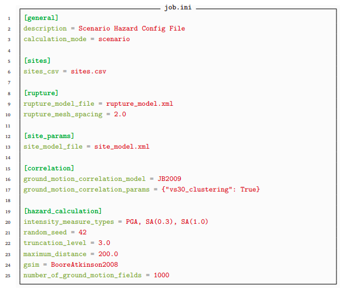
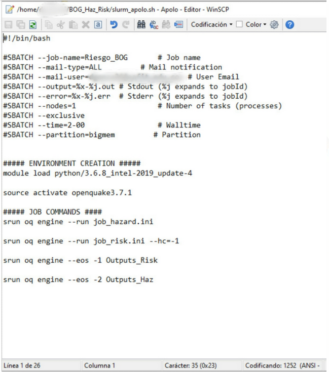

OpenQuake 3.9
Basic information
Official Website: https://www.globalquakemodel.org/oq-get-started
Download Website: https://github.com/gem/oq-engine
License: GNU Affero General Public License v3.0
Installed on: Apolo II
Installation date: 12/06/2020
Tested on (Requirements)
OS base: CentOS (x86_64) \(\boldsymbol{\ge}\) 6.6 (Rocks 6.2)
- Dependencies to run OpenQuake:
Python 3.X (tested on Python 3.6.5)
Installation
The following procedure is the easiest way to install OpenQuake 3.9 in a cluster.
Note
OpenQuake at the moment only runs via
.pyfiles, therefore is not posible to install it properly in a cluster. Only the user that clones the repo can run OpenQuake.
Now, for being able to install and run OpenQuake please follow these instructions:
Load the dependencies so OpenQuake will be able to run.
$ module load python/3.6.5_miniconda-4.5.1
We create a conda environment, so we can run OpenQuake in a secure environment (it is not necessary but we recommend it).
$ conda create --name openquake3.9 $ conda activate openquake3.9
Clone the repository
$ mkdir src && cd src $ git clone https://github.com/gem/oq-engine.git --depth=1
Install the dependencies
$ pip install -r oq-engine/requirements-py36-linux64.txt -r oq-engine/requirements-extra-py36-linux64.txt $ pip install -e oq-engine/[dev]
To verify that the installation was done correctly, run the following command:
$ oq engine
The output should be similar to this:
usage: oq engine [-h] [--log-file LOG_FILE] [--no-distribute] [-y] [-c CONFIG_FILE] [--make-html-report YYYY-MM-DD|today] [-u] [-d] [-w] [--run JOB_INI [JOB_INI ...]] [--list-hazard-calculations] [--list-risk-calculations] [--delete-calculation CALCULATION_ID] [--delete-uncompleted-calculations] [--hazard-calculation-id HAZARD_CALCULATION_ID] [--list-outputs CALCULATION_ID] [--show-log CALCULATION_ID] [--export-output OUTPUT_ID TARGET_DIR] [--export-outputs CALCULATION_ID TARGET_DIR] [-e] [-l {debug, info, warn, error, critical}] [-r] [--param PARAM]Warning
In case of multiple installations:
If any other installation of the Engine exists on the same machine, like a system-wide installation made with packages, you must change the DbServer port from the default one (1908) to any other unused port. Change it in the file:
oq-engine/openquake/engine/openquake.cfg
Usage
An OpenQuake-engine seismic source input model contains a list of sources belonging to a finite set of possible typologies. Each source type is defined by a set of parameters - called source data - which are used to specify the source geometry and the properties of seismicity occurrence.
To measure the impacts of an earthquake, OpenQuake relies on two calculations, hazard and risk calculations, which must be performed through a configuration file called job.ini See an example of a job.ini for a hazard calculation:

Running Example
This is an example for Apolo in SLURM.
Use this command to run the job:
$ sbatch slurm_Apolo.sh
Basic Commands
To see the results of running the calculations, use the following command (the first one in case of risk calculations, the second one in case of hazard calculations).
$ oq engine --lrc $ oq engine --lhc
To see the specific outputs of a calculation, identify the calculation id and use the following command. You can see the calculation after running the previous command and then identify the number at the beginning of the required calculation line.
$ oq engine --lo <calculation_id>
To export a specific output of a calculation, identify the output id (you can see it after running the previous command) and use this command to get the output and save it in the directory of your preference, if it doesn’t exist, it will be created.
$ oq engine --eo <output_id> <directory_path>
Always remember to end OpenQuake after finishing the job using this command.
$ oq dbserver stop
See also
For a detailed manual of the use of the application go to https://docs.openquake.org/manuals/OpenQuake%20Manual%20%28latest%29.pdf
To directly generate the job.ini file, OpenQuake has a tool called ipt so the user only has to set the necessary parameters. More information at: https://github.com/gem/oq-engine/blob/engine-3.9/doc/running/server.md
Note
If it fails when you run the job, use this command to see error details.
$ less <job_name>-<job_id>.err
The job id is the one specified in the slurm file as job-name, and the id is the one sent by email when the job started running.
For more information of how to use OpenQuake, please visit the official website.
Change it in the file: oq-engine/openquake/engine/openquake.cfg
For more information on how to use OpenQuake, please visit the official website.
References
- OpenQuake - OpenQuake Official website.
- Installation - OpenQuake Official Website.
- Usage - OpenQuake User Manual
https://docs.openquake.org/manuals/OpenQuake%20Manual%20%28latest%29.pdf
- Author:
Laura Sánchez Córdoba <lsanchezc@eafit.edu.co>